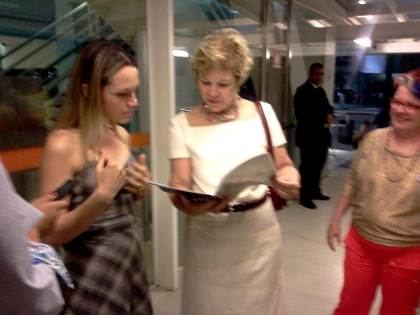

Dumara Lima compartilhou a produção coletiva do Movimento Político e Poético Arara Azul, o poema-convite para a Marcha do Tempo Lento [3]:
para Milton Santos o tempo lento é o tempo da colaboração, da solidariedade, em contraposíção ao tempo rápido da competitividade. o tempo lento é o tempo dos pobres, e daí sua força....
“Vinda de todos os cantos do Brasil, a Marcha do Tempo Lento havia levado o povo inteiro para seu desfile triunfal na Esplanada dos Ministérios. Embalada ao longo de todo o caminho pelo samba-constituição, aquele que todo brasileiro e brasileira sabiam cantar, chegou por fim na beira do Paranoá e o grito que se ouviu foi tão forte, formado de tantas vozes, vontades e desejos de mudança e transformação, que ecoou pelo país inteiro e depois daquele dia nada mais seria como antes”
Enquanto isso, na contagem regressiva para o fim-do-fim em 20 de dezembro, metarecxs articulam o Encontro Emergente de/da MetaReciclagem no Quintal da Cinistra: o Fim do Fim do Mundo [4], o número de adeptos [5] aumenta...
...e algumas das forças-tarefas são concluídas. Ontem, 29/10, em um (des)ato simbólico, a descarta foi entregue para Ministra Marta Suplicy, no Prêmio a Rede, em São Paulo. [6] Não houve uma cerimônia, nem holofotes. Foi uma entrega no desvio, no improviso.
Eu, como "portadora desrepresentante", disse que a descarta nasceu de uma construção coletiva e aberta, que expressava o desejo de algumas pessoas para caminhos possíveis com outras interfaces (meio ambiente, tecnologia, ciência, comunicação), e que não se tratava de algo como "reivindicações da MetaReciclagem para estímulos, prêmios, e/ou editais". A ministra agradeceu e disse que iria ler com atenção.

Hoje pela manhã enviei o link da descarta [7]e o formato digitalizado + assinaturas (versão 0.1.2 [8]) para suas assessoras - que coletaram depoimentos (meu, do Felipe Cabral e da Vanessa Ferreira) para uma notinha no site do MINC [9].
Metarecxs e aliadxs que também estiveram "presencialmente" por lá: Sília Moan, Hdhd, Marcelo Braz, Drica Guzzi e Tati Prado.